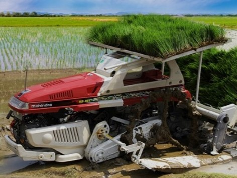

ARTIKEL
Tanam Padi Lebih Efisien Menggunakan Rice Transplanter
___
Kementan (Kementrian Pertanian) terus berupaya untuk meningkatkan hasil produksi pertanian di indonesia demi kedaulatan pangan yang ingin dicapai. Satu hal yang dilakukan untuk mendukung adanya peningkatan hasil pertanian adalah pemberian alat dan mesin pertanian (alsintan) yang memudahkan petani mengolah lahan pertanian mulai dari tahap persiapan lahan, penggarapan lahan, penanaman, panen, hingga pasca panen. Mesin transplanter merupakan salah satu alsintan yang dikenalkan oleh kementan kepada para petani dalam rangka modernisasi pertanian. Dengan menggunakan mesin transplanter petani membutuhkan tenaga yang lebih sedikit untuk menanam padi. Bahkan, mesin transplanter bisa menentukan jarak antar tanaman padi yang memungkinkan untuk pertumbuhan optimal. Kemudahan apalagi yang bisa anda dapatkan dengan menggunakan mesin transplanter? Adanya mesin transplanter membantu mengatasi masalah kurangnya buruh tani.
Perkembangan zaman membuat tak banyak lagi buruh tani yang tersisa. Sedangkan di Indonesia, pemilik sawah masih tergolong banyak. Masalah datang ketika musim tanam tiba. Kehadiran mesin transplanter, tentunya dapat mengatasi masalah tersebut. Petani tidak perlu lagi bingung masalah kekurangan tenaga karena bisa dilakukan secara otomatis dengan menggunakan mesin. Rice transplanter bisa menanam padi secara otomatis pada lahan yang sudah disiapkan. Mesin ini juga bekerja dalam waktu yang lebih cepat daripada menggunakan tenaga manusia. Dengan menggunakan mesin ini, petani malah diuntungkan karena pekerjaan selesai secara lebih efisien dan praktis.
Padi yang ditanam dengan menggunakan transplanter memiliki kualitas yang baik .Kehebatan mesin transplanter untuk membantu petani menanam padi sudah seharusnya tidak diragukan lagi. Pasalnya, alsintan andalam Kementan ini bisa memperkirakan jarak yang tepat antar padi untuk bertumbuh. Mesin transplanter menerapkan jarak 20x25 cm, lebih sempit daripada jika ditanam oleh manusia yang membutuhkan jarak 30x30cm. Jarak yang lebih sempit ini tentu bisa meningkatkan efektivitas lahan karena memungkinkan lebih banyak padi ditanam.
Jarak penanaman juga dapat lebih presisi jika dilakukan dengan transplanter dan itu memberikan efek yang baik bagi tumbuhan. Padi yang ditanam pada jarak yang sama, memungkinkan tanaman ini untuk tumbuh lebih tinggi. Di samping itu, padi juga lebih tahan hama jika dibandingkan penanaman secara manual.
Cara Penggunaan Mesin Transplanter
Saat awal alsintan ini dikenalkan oleh Kementan untuk mempermudah proses produksi padi, mungkin banyak yang bingung tentang cara penggunaannya. Padahal, mesin transplanter ini sangatlah mudah dalam penggunaannya. Petani tak perlu butuh banyak waktu untuk menanam padi di sepetak sawah. Anda hanya perlu melakukan pembibitan dalam baki mesin transplanter, hingga menghasilkan gulungan bibit padi siap tanam.
Selanjutnya, letakkan bibit padi di atas mesin. Jika sudah, Anda hanya perlu menjalankan mesin supaya padi tertanam secara otomatis. Cara modern untuk menanam padi ini tentu sangat menghemat waktu dan biaya. Sudah banyak petani yang mengatakan bisa panen setelah 90 hari, alih-alih 95 hari jika dilakukan secara tradisional. Biaya untuk pengurusan lahan hingga penanam pun bisa dihemat hingga 50%. Yang lebih istimewa dan menarik, alsintan ini merupakan bantuan dari pemerintah sehingga para petani tidak perlu membelinya sendiri.
___
Demikian uraian singkat mengenai Tanam Padi Lebih Efisien Menggunakan Rice Transplanter. Untuk lebih jelasnya, kalian dapat menonton Video Tanam Padi Lebih Mudah dengan Mesin Rice Transplanter di bawah ini.
___